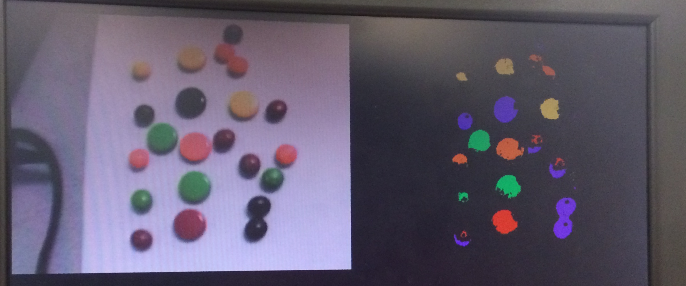

Counting Spree
Real-Time Vision-based Object Identification and Tracking for Manufacturing Applications
In modern high-throughput manufacturing environments, quality control is a critical bottleneck in the throughput of an assembly line. Resources must be put into hiring, training, and staffing workers who manually identify manufacturing defects. The advent of modern high-speed computing provides a means of automating quality control via computer vision. Several recent publications have targeted products ranging from glass to silk and potatoes. However, most of these proposals have aimed to improve and speed up the actual algorithms used to identify defects. In our project, we propose an architecture built upon a System on a Chip (SoC), utilizing a Cyclone V Field Programmable Gate Array (FPGA) and an ARM Cortex-A9 based Hard Processor System (HPS). We demonstrate that a parallel processing system utilizing the strengths of both the FPGA and HPS can be used to implement a vision based object identification and tracking system that can count manufactured objects (and defects) by color.
To demonstrate our design, we have constructed a miniature manufacturing line. To model variations in a product, our plant "manufactures" Spree candies, which consist of five different colored hard candies. A conveyor belt driven by a servo, which is controlled by the FPGA, carries Sprees through the view of an NTSC camera. LED lighting surrounds the conveyor belt to eliminate shadows and to provide an even lighting across the surface of the candy. The FPGA then runs several image transformations to process each frame of the raw video feed. The HPS finally analyzes each processed image, providing a count of the total number of each colored Spree in the frame. The program also tracks each Spree as it moves along the conveyor belt, counting the total number of Sprees "manufactured" by our assembly line.
High Level Design
Our system keeps track of the total number of five different-colored candies in a real-time video feed. Built upon our System on a Chip, our design runs on both the FPGA and HPS. As described in the Introduction, we optimized our system by placing parallelizable, time-consuming image processing algorithms on the FPGA and leaving image analysis (which utlizes algorithms that are difficult and inefficient to implement in hardware) and the user interface on the HPS. As shown in the block diagram below, the system breaks down into several main problems divided amongst the FPGA and HPS. On the FPGA, we handle reading and displaying real-time video input from a camera, processing this video for color recognition and segmentation, and servo control. On the HPS, we handle analyzing the video to count/track objects and running our user interface (UI). Communication between the two systems is done via Parallel-I/O (PIO) ports instantiated in Altera's Qsys system integration tool. Each of these main design problems is described at a high level in the paragraphs below.
System Block Diagram
FPGA-side
The following components were implemented on the FPGA.
Video Input
We use an NTSC video camera for video-input. The camera plugs directly into the on-board NTSC decoder. We configured pre-existing Altera IP on the Qsys bus to support 16-bit color. Using 16-bit color allowed us to achieve finer color-resolution.
Color Recognition and Segmentation
The image processing component of our system includes object recognition and segmentation based on color (candy colors vs. background color). While the HPS is used to sample each color upon system start-up, the FPGA does most of the image processing work. The FPGA performs color recognition on an image by thresholding pixel color values. It also performs the initial image processing that takes a image parsed into target objects and background and processes the image to fill-in any missing pixels within the objects and separate any merged objects.
Servo Control
A simple state machine runs on the FPGA that toggles a single GPIO pin. The output of the GPIO pin serves to control the speed and direction of the servo driving the conveyor belt. Additionally, an external circuit is used to optoisolate the servo from the GPIO output.
HPS-side
The following components were implemented on the ARM-based HPS.
User Interface
Upon system startup, the user is first prompted to calibrate the system via a keyboard. This is to allow flexibility to our system under variations in lighting, or to allow the user to calibrate the system to other colors than the five Spree colors. The user places the object he or she wants to track under a crosshair displayed on the VGA monitor. Upon pressing a button on the DE1-SoC, the system is then calibrated to the object's exact color. The user can then enter a speed and direction for the conveyor belt to move. Once calibration is completed, the system runs automatically.
Tracking and Counting Objects
After finishing calibration, the HPS reads in the opened (processed) frame via the VGA display. The HPS then analyzes the frame - labeling each pixel in the frame by color. Secondly, the HPS labels each connected component, meaning that a "lump" of pixels can now be interpreted as a single Spree as opposed to individual pixels. From these labels, the HPS can identify the total number of each colored Sprees in the frame. Furthermore, the HPS tracks the movement of Sprees across frames in order to count how many new Sprees of each color have moved across the camera's field-of-view since the program began. This information is displayed on the VGA screen via the VGA subsystem's character buffer.
Relationship to Standards and Patents
As mentioned in the Introduction, we were originally inspired to create this project based on currently existing proposals for computer vision based quality control. Furthermore, there are a multitude of academic publications detailing the use of FPGAs to accelerate image processing. However, to our knowledge, ours is the first project to apply both an HPS and an FPGA to accelerate vision processing to target a manufacturing quality control environment.
We are utilizing the NTSC analog television standard as our video input via an NTSC camera. We are outputting video based on the VGA standard. We utilize Altera IP to assist us in reading and writing video frames, as detailed in the block diagram.
FPGA Design
As we have described in the High Level Design section, the FPGA takes in video input using the on-board NTSC decoder, performs color thresholding and segmentation, and writes the raw video, six-color image, and opened image to the VGA. All of this is implemented with two state machines, whose state diagrams are in the images below. The details of each of these parts is described in the following sections. In addition to the image processing, the FPGA also controls the servo using PWM from a GPIO port.
Primary and Secondary State Diagrams
The video-input, VGA, and image processing work on the FPGA is all done in two main state machines. The primary state machine reads video input, performs color thresholding and erosion, and writes pixels to the VGA. The secondary state performs image dilation in parallel with image erosion in the first state machine. Both state diagrams are shown below.
Primary FSM - Video-input, Thresholding, Erosion, and VGA display

Secondary FSM - Opening
Color Recognition
Our color recognition algorithm compares the 16-bit RGB value of every pixel in a frame against ranges for each target color to determine the color of the objects on the screen. Our problem statements specifies five target colors that each candy must be. These are red, green, orange, yellow and purple. It also states that the candies will be placed on a solid white background. Given this information, we are able to specify appropriate RGB ranges for each of these five colors and perform color thresholding for each of these ranges. The FPGA performs color thresholding on every pixel while the HPS is used only for threshold callibration upon system start-up.
Upon system start-up, the user can callibrate the color thresholds for each color by following the commands on the serial console. For every color, the HPS records one RGB value to use as the center of the color range. From there, threshold values are added to this center value, resulting in a range for each color. The upper and lower thresholds for each color are then sent to the FPGA through PIO ports. From here, the FPGA uses these values to determine the color of each pixel.
The FPGA determines the color of each pixel by checking if it falls within the ranges specified by the HPS, and then stores this information, per frame, in an inferred memory block. The memory block, named colored_RAM in our code, stores information for every pixel in the frame that is currently being read from video input. The color of each pixel is encoded as a 4-bit color.* As each pixel is read from SRAM and written the the VGA SDRAM, it is also thresholded for color. The combinational thresholding is implemented in the Verilog module color_thresholds. This module takes in the current pixel color and outputs binary flags for each color to signal if it falls within a certain color range. If a pixel is determined to fall within a color range, it is then written to 'colored_RAM' with the corresponding encoded color. The six-color image is then displayed on VGA next to the raw video, as seen below. It is possible for a pixel to be fall within multiple color ranges, if the ranges overlap. In this case, the pixel would be classified as being two colors by the color thresholding module, but it would only be drawn as one color by main bus master.
Raw Video Image (left) and Color Thresholded Image (right)
The most challenging part about determing the color of an object with color thresholding is that not every pixel that composes that object in a image will have the same exact RGB value; a red candy might contain fifty different shades. The color variation across an object depends greatly on the lighting conditions, which change how light casts shadows and reflects off an object. As such, maintaining good lighting conditions are very important for the quality of the color thresholded image (if the entire candy is recognized as one color or not). The figure above shows both Skittles (smaller candy) and Sprees (larger candy). As seen in the original image on the left of the VGA display, there are slight white reflections off of both candies. These reflections translate to the color thresholded image as black spaces in the middle of the candies, as seen on the right of the VGA display. We found that the rounded shape of Skittles tends to make them more prone to reflections, so we opted to use Sprees for better thresholding results.
* We chose to encode each color rather than store the entire 16-bit RGB value to minimize the size of the memory block. We found that if we stored 16-bit color, we simply could not store an entire 320x240 frame of pixels in RAM. Using 4-bit color gives us more than enough room to store three entire 320x240 frames in on-chip memory.
Color Segmentation
Once we have the color thresholded image, the next step is processing the image to eliminate any unwanted gaps inside objects or connections between separate objects. We accomplish this by using two binary morphology operators: erosion and dilation. We 'open' the image, which is an erosion followed by a dilation.
Left: Erosion of dark blue square by disk, resulting in light blue square
Right: Dilation of dark blue square by disk, resulting in light blue square
Image from Wikipedia (Author: Renato Keshet)
Erosion
The erosion operator tends to make objects in an image shrink, as seen in the figure above. The algorithm for erosion of a binary image where the object in the image has the value 1 and the background is 0 is as follows. For every pixel, a structural element (SE) is chosen around the pixel. If the SE contains at least one pixel of value 0, the current pixel is drawn as a 0 in the eroded image. The image is padded with 0s around the edges. In our erosion algorith, we use a 7x7 square SE.* Erosion is performed in the primary state machine, as shown in the state diagram at the beginning of this section. The state machine iterates through every frame, and for every pixel, it finds the top-left pixel of the SE and iterates through the entire SE to read these pixel values from the thresholded color image and stores them in a 49-bit vector. Once it has iterated through an entire SE for one pixel, the bit vector is AND-ed to determine the pixel color in the eroded image. This value is then stored at the appropriate address in another RAM block. If a pixel does not have a complete SE because it is near the edge, it is immediately given a zero in the eroded image.
Dilation
The dilation operator tends to make objects in an image grow, as seen in the figure above. The algorithm for dilation of a binary image is as follows. For every pixel, a structural element (SE) is chosen around the pixel, similar to erosion. If the SE contains at least one pixel of value 1, the current pixel is drawn as a 1 in the eroded image. As with erosion, the image is padded with 0s around the edges. In our dilation algorithm, we use a 7x7 square SE.* Opening is performed in the secondary state machine to allow for parallel computation alongside erosion. The state machine transitions are very similar to the steps for erosion, only differing in how the SE bit vector is used to determine the value of pixels in the opened image. Rather then being AND-ed, the vector is OR-ed to determine the value of every pixel.
Opening
The erosion and dilation for one frame must be performed sequentially in order to achieve opening. We pipeline the erosion and dilation to speed up the image processing for each frame. This requires a synchronization scheme between the two state machines. The opening state machine waits for an enable signal from the main state machine, which is switched high once enough pixels in the frame have been eroded. The enable signal is held high until an entire frame has been eroded, at which point the main state machine enters a state to wait for a done signal from the opening state machine signaling that an entire frame has been eroded. The opening state machine holds the done signal high until it recieves an ack from the primary state machine. This scheme allows a frame to be eroded and dilated almost in parallel, which nearly halves the image processing time on the FPGA.
* Through testing, we found an SE size of 7x7 to give the best results.
NTSC Video Input
Video-input data is read from on-chip SRAM in the primary state machine, and then written to VGA SDRAM.
Qsys
A majority of the Qsys layout for this project is the same as the layout for previous labs. It includes the VGA_Subsystem, which is controlled by our state machine via the EBAB bus. Additionally, we added several PIO ports to allow for passing information from the HPS to the FPGA. Unlike the layout for previous labs, this layout also includes the Video_In_Subsystem, which writes data from the video-in decoder to on-chip SRAM. A portion of the top-level Qsys module, showing the VGA_Subsytem and Video_In_Subsytem, is shown below.

Portion of the Top-Level Qsys Layout
We instantiated several 16-bit PIO ports to give the FPGA high and low color thresholds for each color, as well as to set a PWM duty cycle. The image below shows an example of two PIO ports in Qsys.

Two PIO Ports in Qsys
Servo Control
A simple 2-state machine was used to generate the control signal for the continuous rotation servo. As shown in the figure below, a PWM signal with a high period of 1.3 to 1.7ms (1.5ms for no movement) and a low period of 20ms needs to be generated. To do so, we simply count the required number of cycles (taking into account a 50MHz clock), and toggle a GPIO pin high and low.
Servo Control Signal
The external circuit to control the servo is shown below. We use a 4N35 optocoupler to optoisolate the GPIO pins from the servo circuitry. This prevents any damage from inductive spikes generated by the servos, as there is no electrical connection between the GPIO and the servo. The servo is powered via an external 5V power supply
Servo Circuitry
HPS Design
As mentioned in High Level Design, our HPS program runs the high-level analysis on the processed frame and runs the user interface. All of our code is written in C. The different files that comprised our HPS program is listed below, with detailed code listing in the Appendix.
- main.c - Main function
- graphics.c/h - Graphics functions (Mostly written by Bruce Land)
- vision.c/h - Functions for vision processing and analysis
- address_map.h - Definition of addresses for VGA, PIO, memory, etc.
Address Translation
Our program starts by first obtaining virtual memory mappings to the requisite physical addresses for the on-chip SRAM, SDRAM, and lightweight HPS-to-FPGA bus. These mappings are done via the mmap function using the appropriate addresses from address_map.h, which we obtained from the Qsys layout. Using this method, we obtained pointers to the VGA pixel and VGA character buffers connected to the SDRAM via Qsys. We also obtained the video input address, which is connected via Qsys to the on-chip SRAM on the FPGA. Thus, we could read or write to any arbitray pixel on the VGA monitor. We also obtained the virtual base address to the HPS-to-FPGA lightweight bus. This allowed us to map our PIO ports as pointers in the C program. Thus, we were able to simply access wires in the FPGA by writing to specific addresses in the HPS. We used these PIO ports to define the calibration values for each color as well as the speed of the servo.
User Interface
Once the address translation is complete, we have a virtual address of specific wires on the FPGA. We will use these wires for calibration. We begin by prompting the user to calibrate the five different colors associated with Sprees: red, orange, green, yellow, and purple. As mentioned earlier, we recalibrate before running our program in order to account for any variations between lighting, distance to the camera, or color of the Spree between runs. To calibrate the system, a green crosshairs is drawn via the VGA_pixel function in the raw video feed, as shown below. The pixel colors for the pixel directly in the middle of the crosshairs, in RGB space, are printed in the screen via the VGA_text function. The user places the corresponding color Spree below the crosshairs and presses KEY3 on the FPGA in order to calibrate the image.
Calibration Mode
When the button is pressed, the RGB values for the calibration pixel are recorded. A range of accepted values for the R,G, and B components of each color is then generated by adding (for the upper bound) or subtracting (for the lower bound) a pre-defined "slack" value to the recorded calibration value. From this, an upper and lower bound for the R, G, and B components are generated. These bounds are stored in a color_threshold_t struct, shown below.
//Struct for holding the thresholds of colors
typedef struct color_threshold{
unsigned int low_R;
unsigned int high_R;
unsigned int low_G;
unsigned int high_G;
unsigned int low_B;
unsigned int high_B;
} color_threshold_t;
Struct for Holding Calibrated Thresholds
The user calibrates all five colors following this procedure. The calibrated values are then written to the corresponding PIO port. As described in the FPGA Design section, there are two 16-bit PIO ports for each Sprees color, one for an upper bound and one for a lower bound. The aforementioned color_threshold_t values are converted to a 16-bit RGB value in 5-6-5 format and sent to the FPGA by simply writing to the virtual address corresponding to the PIO port. For example, the PIO port for lower bound for purple is simply defined as unsigned int* PIO_purple_low_addr.
Finally, the user enters the speed and direction for the servo. The entered value is in a range from 0 to 100 corresponding to a full reverse to full forward speed (with 50 being no movement). The entered value is translated to a 32-bit number corresponding to the number of cycles that the PWM wave should be HIGH (refer to the previous discussion regarding servo control) by the linear equation 500*speed + 50000. This value is likewise sent to the FPGA via a 32-bit PIO port. Once calibration is complete, the serial terminal should appear as below, and the image processing should begin.
User Interface
Frame Capture and Color Labeling
The first step in image analysis, once the calibration is complete, is to capture the processed frame. This is done by reading in the value of the pixel currently displayed on the monitor via the function VGA_read_pixel_16. Thus, we loop through the lower-right region of the screen that contains the processed (opened) image. For each pixel, we check if it is either a background color (black) or a color corresponding to one of our five calibrated colors (orange, red, purple, green, or yellow). Instead of storing the full 16-bit color, we simply encode each pixel as a value from 0 to 5, corresponding to which color the pixel is. We store this in a 320 by 240 2D array, which represents the current frame.
Component Labeling
Once we have an encoded 2D array of our current process, we need to identify individual components out of our matrix of pixel colors. An example of a processed image is shown in the figure below. We define a single Spree as one connected component of the same color. We define a connected pixel as 4-connected, meaning that a pixel is defined as "connected" to another pixel if and only if it is directly adjacent to the other pixel, excluding diagonals. An example of 4-connectivity is shown below.
Processed Frame
4-connected pixel (From The University of Alberta)
Our task is to equate each mass of connected pixels as one connected component. In other words, in order to count Sprees, we need to identify one Spree as a connected component. To do so, we call the function count_components. The first task performed by this function is to identify all connected components. It does this via Depth-First Search (DFS).
Depth-First Search treats our 2D color array as an undirected graph, with each pixel as a node and each node connected to its adjacent pixels as defined by 4-connectedness if and only if they are of the same color. The algorithm recursively traverses through the input array, starting at a pixel, and labels all pixels in the connected component. The algorithm for DFS is shown below. i and j are simply the row and column, respectively, indices of the pixel to start at. m is the color-coded 2D array. label is a pre-labeled array on which DFS may have already been run for other pixels. Finally, reference_color is the color we want to label, considering all other colors as background. The function begins by simply returing if the indices are out of bounds or if the current pixel is already labeled or is not the reference color. It then labels the corresponding pixel with a non-zero input label curr_label, which allows us to identify different components. It then recursively calls DFS on the four adjacent pixels, labeling all pixels in the connected component with the same label value. In this manner, we iterate through all pixels in the 2D color array, calling DFS on a pixel if it has not previously been labeld and if it is not a background color. Thus, the indices in the label matrix that correspond to the original 2D color matrix will be labeled with the same value if and only if they are connected. By seeing how many unique labels are in the label matrix, we can count how many connected components of each color there are in a single frame.
/*
* perform dfs on input matrix m, using label matrix label, starting at row i and col j, and label
* the connected component with curr_label
* PRECONDITION: non-labeled elements in "label" are set to 0
*/
void dfs(unsigned int m[ROWS][COLS], unsigned int label[ROWS][COLS], unsigned int reference_color, int i, int j, unsigned int curr_label){
//Bounds check
if(i < 0 || i >= ROWS || j < 0 || j >= COLS){
return;
}
//If already labeled or background pixel or a different color, return
if(label[i][j] != 0 || m[i][j] != reference_color){
return;
}
//Label the current pixel
label[i][j] = curr_label;
//Recursively label the neighbors
dfs(m, label, reference_color, i, j+1, curr_label);
dfs(m, label, reference_color, i, j-1, curr_label);
dfs(m, label, reference_color, i+1, j, curr_label);
dfs(m, label, reference_color, i-1, j, curr_label);
}
Component Tracking
Although we may know how many Sprees of each color are in a single frame, we must also track Sprees across frames in order to not double-count the total number of Sprees manufactured since we started our system. Thus, as a Spree moves across the field-of-view of the camera, it should only be counted once.
We originally tackled this problem by attempting to retain the label of the connected component across frames. In other words, a single connected component should be labeled with the same label by our DFS algorithm across frames as it moves. However, we realized that there are cases where noise or variations in color caused by shadows may sometimes result in a single connected component breaking up into two or more separate components for a single frame, meaning that this approach would not work.
Thus, our approach to tracking components was to compare two frames. We store the previous frame, and after we identify all the components of the current frame, we compare the two frames. We identified three cases that could occur from frame to frame:
- A Spree appears in the camera's field-of-view for the first time.
- A Spree moves from one location to another across frames.
- A Spree leaves the camera's field-of-view.
Taking these cases into count, we developed an algorithm to track components across frames. First, we obtain the centroids of all connected components in the current frame. We then look at each centroid. The second case (a Spree moves from one location to another across frames) occurs if there was a colored region in the previous frame at the same location of the centroid. In other words, the centroid in the current frame is still within the colored region where the component was in the previous frame. In this case, we do not count this centroid (and its component) as a new Spree. If the centroid does not overlap any colored regions of the previous frame, we consider this to be case 1, where a Spree enters the field of view. In this case, we do count this connected component as a newly-manufactured Spree. Finally, we can safely disregard case 3, as we do not want to count a Spree that leaves the field of view anyway.
Using this algorithm, we were able to correctly count most Sprees. However, we did initally have problems double-counting Sprees, as when Sprees initially came into frame, the first frame was very small and noisy. Thus, our "scanning range", where we track Sprees, is only the middle third of the screen. This allows time for the image to stablize before we track the Sprees to prevent double-counting. Secondly, sometimes we would double-count sprees if the conveyor belt was moving too fast, such that a centroid would not be overlapping the component in the previous frame. To account for this issue, we both slowed down the conveyor belt and extended the region to search for (in case 2). This greatly improved our accuracy in tracking the total number of Sprees manufactured.
Once we finish tracking and counting Sprees for the current frame, we display the data onto the screen in the lower left-hand corner. As shown in the figure below, we report the total number of Sprees manufactured and the total number manufactured by color. We also report the total number of each colored Sprees that are visible to the camera. We repeat this frame-after-frame, allowing us to accurately track and update the counts as the conveyor belt moves. This completes the design of our system.
Final Screen with Reporting
Testing and Results
We approached our design in an interative and modular manner. Our design could easily be broken up into several different components: color thresholding, image processing, image analysis, servo control, and user interface. Thus, we were able to approach our design by implementing and unit testing each module before assembing the different components together to form our final design. For each of our modules, we began by first deciding on the algorithm to implement. We evaluated different algorithms in higher-level languages before implementing them on our system. We then translated our higher-level design into either C or Verilog. Finally, we unit tested each implementation to ensure it worked. Once we finished a module, we integrated it into our system and integration tested the entire system to ensure functionality. We describe our testing and results for each component below.
Color Thresholding and Processing
We initially began our design by running tests in OpenCV and MATLAB. Our first goal was to determine an appropriate color space to run our detection algorithm in. From OpenCV results, we determined HSV worked effectively. However, once we attempted to implement it in Verilog, we discovered that translations between input RGB to HSV for processing and back to RGB for output introduced overhead and complexity into our system. Thus, we used RGB for thresholding purposes. However, we did modify our Qsys subsystems in order to use 16-bit RGB instead of 8-bit RGB, allowing us a much larger dynamic range of colors.
Once we found the appropriate thresholds for the RGB color space, we needed to find an appropriate processing algorithm to denoise our image and to fill in any holes in Sprees. We also wanted to remove any connectivity between neighboring Sprees. We evaluated multiple algorithms in MATLAB on a sample image, including the Hough transform and erosion, before deciding on opening as our algorithm to use. The images below show our test results using Opening in MATLAB, showing that opening is an effective algorithm for our purposes.
Raw MATLAB input
MATLAB Opening Output
We also implemented opening in C on the HPS before porting over to Verilog. The functions for erosion and dilation are found in the vision.c code for the HPS. Using just the HPS, we could only obtain a maximum of 1 frame per second of video processing. However, once we successfully implemented color theresholding and opening on the FPGA in Verilog, we could achieve the same pixel-perfect output, yet up to 10 frames per second. Thus, our algorithm running on the FPGA shows a 5x to 10x speedup in our final results.
The image below, generated by the FPGA, shows a thresholded image as well as the corresponding opened image. As shown in the image, we are able to determine the colors of five different colored Sprees and perform processing that results in five connected objects. The necessity of image opening is perhaps most evident on the green and red Sprees. In the pre-opening image, the green Spree is mostly connected but has several floating pixels, and the red Spree has a small a sliver of orange. Opening the image eliminates both these issues.
Top: Thresholded Image, Bottom: Opened Image
The inaccuracies present in the pre-opening image are likely due to our color thresholding algorithm being too simple to account for all the variation present in our system. Implementing color thresholding was the first step in our work time-line, so we opted for a simplistic approach. We did not realize that accurate color thresholding is arguably the most important important step in our system since it must be able to handle the most variation. We found that no matter how we tried to callibrate some colors and adjust their thresholds, we could not get consistently good results across varied conditions. We suspect that had we chosen to use a different color space, such as HSV, and developed a more complex algorithm to handle color variations across the surface, we may have achieved even better results.
Object Tracking and Counting
We first began at looking how to count connected components in a frame. We used MATLAB to test out different algorithms to use. Our first success was to use a MATLAB algorithm called bwlabel on a binary image, which labels the image in much the same way as we do with DFS. Looking into the source code, we saw that bwlabel uses a two-pass algorithm. However, we also tested DFS, which is a simple and easier to implement one-pass algorithm. We decided to use DFS, as it was easier to implement and was arguably faster, as it only needed one pass through the image.
Object tracking was arguably the most difficult aspect of the HPS code, as there was no reference algorithm for us to use, since our system presents a unique setup. Thus, as described in our design sections, we initially began by thinking about the different cases frames we could obtain. We then added code to handle each case until we could reliably track Sprees.
Overall System
Overall, we were able to track and count sprees with high reliability, as shown in the figure below. However, our reliability varied based on the variations in color caused by our conveyor belt moving up and down not matching our initial calibrations. In slow-moving track, we could generate perfect components and track them. However, as the conveyer belt moved faster, the Sprees began "bouncing" on them more, causing them to move closer and farther away from the camera, as well as angle away from the camera. These variations caused our originally-calibrated values, which were calibrated under perfect conditions, to miss some specific colors that were more sensitive, such as orange. Thus, under ideal conditions, we were able to track every individual Spree that passed through our frame. However, our reliability was reduced due to the variations caused by our construction. We believe that we can achieve a near-perfect system, with detection above 99 percent, if we constructed a more consistent and rigid conveyor belt. While it is difficult to give precise accuracies, as accuracy differs based on the many different factors we mentioned earlier, under current conditions, we can achieve accuracies up to 90 percent. This shows that our system is an effective architecture to perform inventory tracking or quality control in a manufcaturing environment, and we believe it can be improved with a few enhancements in the construction of our assembly line. We show our system running in the video linked below.
Tracking and Counting Results
Demo Video
Conclusions
Overall, our project met our expectations, as we could count and track Sprees moving across our video frame with high reliability. We met all the goals that we set out to do, including video input, color detection, color segmentation/image processing, object counting, and object tracking. We even implemented a few reach goals such as constructing a moving conveyor belt. However, we do acknowledge that improvements to the tracking algorithm and to the construction quality will need to be made to bring this project into practical manufacturing applications. Furthermore, while we can run at 5-10 frames per second, a even larger increase in frame rate will be necessary to run with fast-moving conveyor belts. In the end, we were proud of the work we accomplished across only a few weeks and two people.
Our base for this project was built upon the Video input project written by Bruce Land and linked on the 5760 website. This project includes multiple Altera IP cores, such as the VGA subsystem and the video input core, that are instantiated through Qsys. However, we heavily modified this base code to add in our project components. We also used the Sprees brand for our project. To further expand our product, we would need to remove any reference to Sprees or work with the manufacturers to license their product.
Appendices
Appendix A: Website and Video Approval
The group approves this report for inclusion on the course website. The group approves the video for inclusion on the course YouTube channel.
Appendix B: Code
- Verilog
- C code for HPS
Appendix C: Work Distribution
Claire:
I worked primarily with the FPGA: building the state machines and implementing the initial image processing first by writing erosion and dilation in C and then implementing those algorithms in Verilog. As such, I wrote the lab report sections that relate to these areas.
Mark:
I worked primarily with the HPS development on the project. I researched and developed the algorithms to perform the image analysis and tested different image filtering algorithms in MATLAB. I also developed the servo controls and constructed our "assembly line". Thus, I wrote the report sections that pertain to those areas.
Appendix D: References
We would like to thank Prof. Bruce Land and all the TAs for their help throughout the semester. All the datasheets and references we used throughout this project are listed and linked below.
Resources
Optoisolator datasheet:
4N35
DFS Docmentation:
Blog
Connected Component Analysis:
Website
Connected Component Analysis:
Wikipedia
Morphological Opening:
Wikipedia
Altera/Quartus/DE1-SoC Resources:
5760 Webpage